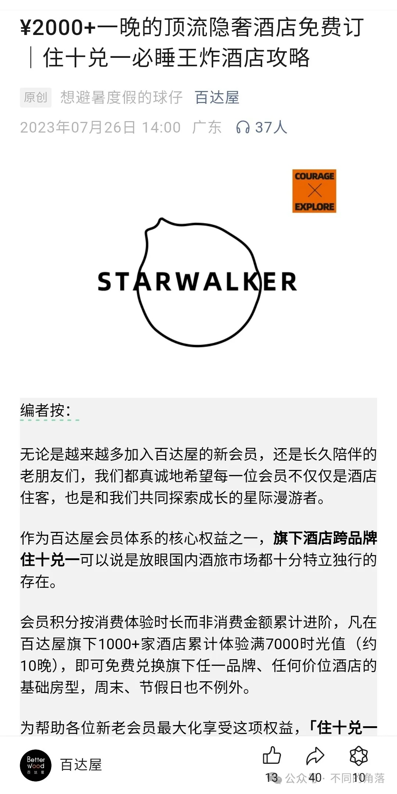

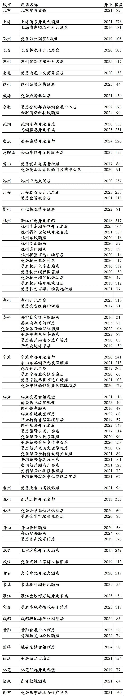
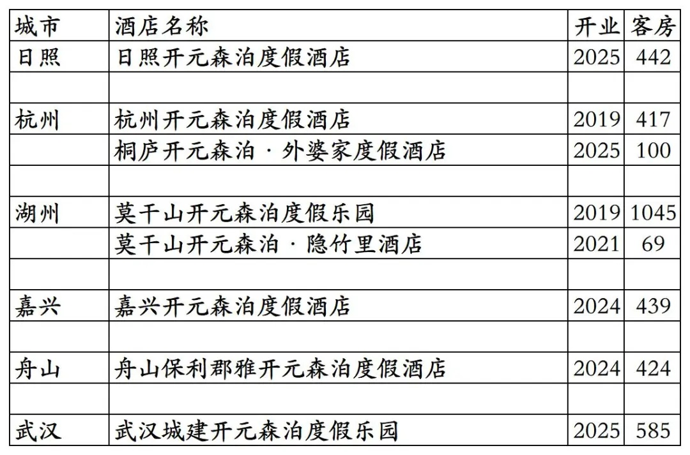
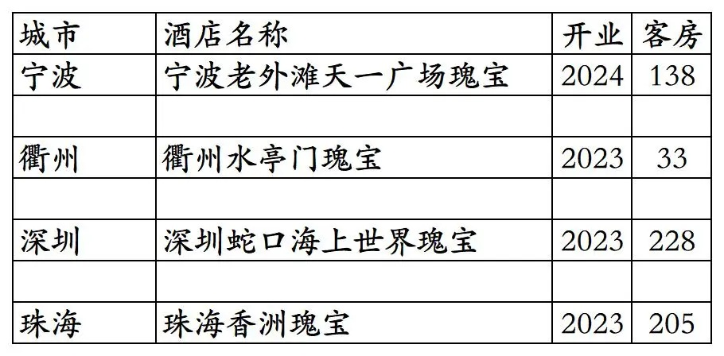
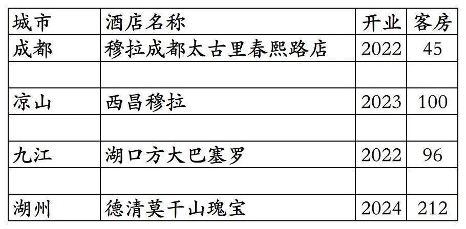
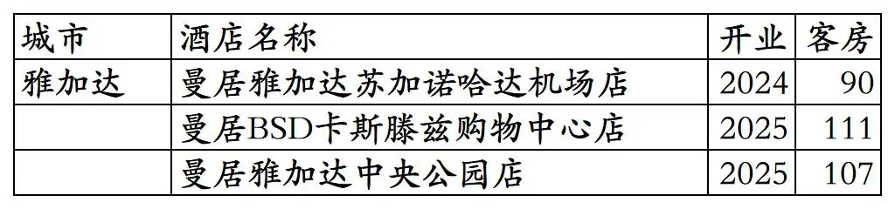
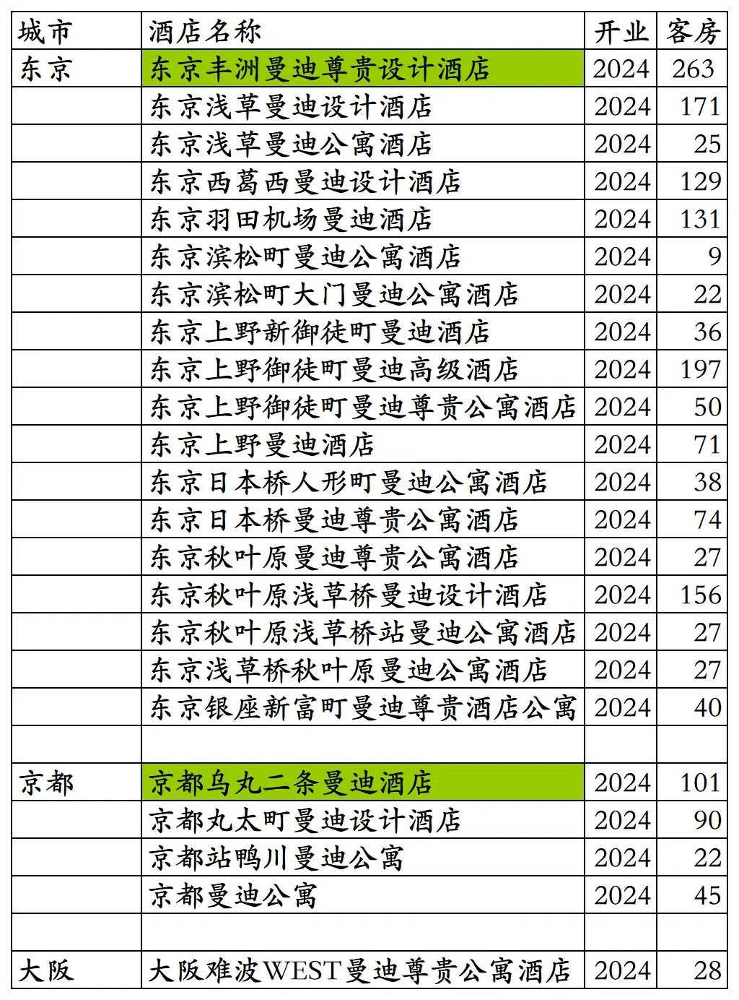


截至2025年12月31日，百达屋APP可以查询到德胧旗下各品牌酒店517家。
517家酒店包括国外印尼曼居酒店3家；德胧旗下百达屋旗下品牌瑰宝酒店4家；已退出/关停(多家酒店2023年时就已退出，多家酒店早已翻牌)所有日期都不能预订的开元旗下品牌酒店84家；所有日期都不能预订的开元森泊品牌酒店2家。
截至2025年12月31日百达屋平台可预订并累积时光值的德胧旗下酒店(开元+百达屋+其它)共计400多家，还不足百达屋2023年7月吹牛13的1000+酒店的一半。

去除3家德胧旗下印尼酒店，4家百达屋旗下品牌酒店，84家已退出酒店，2家开元森泊，截至2025年12月31日，百达屋平台德胧旗下开元旗下国内酒店共计424家客房69070间(部分酒店所有日期都不能预订)。
加上4家百达屋旗下瑰宝品牌酒店，德胧国内酒店共计428家客房69674间。
加上国外印尼3家曼居品牌酒店，德胧全球酒店共计431家客房69982间。
目前国内黑龙江、甘肃、青海无酒店。
开业：新酒店开业或是其它酒店翻牌开元时间；客房：客房数量。
百达屋平台424家开元旗下品牌酒店

百达屋平台84家已退出/关停开元旗下品牌酒店，部分酒店目前仍挂开元品牌，但已与德胧无关。

开元酒店集团原大股东开元旅业旗下8家开元森泊品牌酒店，杭州开元森泊、莫干山开元森泊目前还挂在百达屋平台，所有日期都不能预订。
舟山保利郡雅开元森泊记得好像之前上线过百达屋。 莫干山开元森泊度假乐园分出69间客房命名为莫干山开元森泊·隐竹里酒店在OTA上单独售卖，实际上还是莫干山开元森泊的一部分。

百达屋平台4家德胧旗下百达屋引进的瑰宝品牌酒店。

瑰宝为百达屋引进的德国瑰宝酒店集团旗下酒店品牌，现在瑰宝集团旗下瑰宝酒店品牌已经被洲际收购，成为洲际旗下品牌。
4家已经退出的百达屋旗下品牌酒店。
2022年5月开业并上线开元商祺会APP，仅半年就退出翻牌为其它酒店的穆拉酒店成都太古里春熙路店(挂牌穆拉之前是成都间白酒店春熙路太古里店，退出穆拉后加盟瓦当瓦舍现在是瓦当瓦舍成都春熙路IFS国金中心店)。
西昌穆拉开业后一直未上线百达屋平台，目前酒店名称未变，打电话咨询告知已与德胧无关。
2022年9月开业并上线开元商祺会APP，但一直不能预订的湖口方大巴塞罗酒店(现湖口方大九钢酒店)。巴塞罗为百达屋引进的西班牙巴塞罗酒店集团旗下品牌。

百达屋平台3家印尼曼居酒店。


